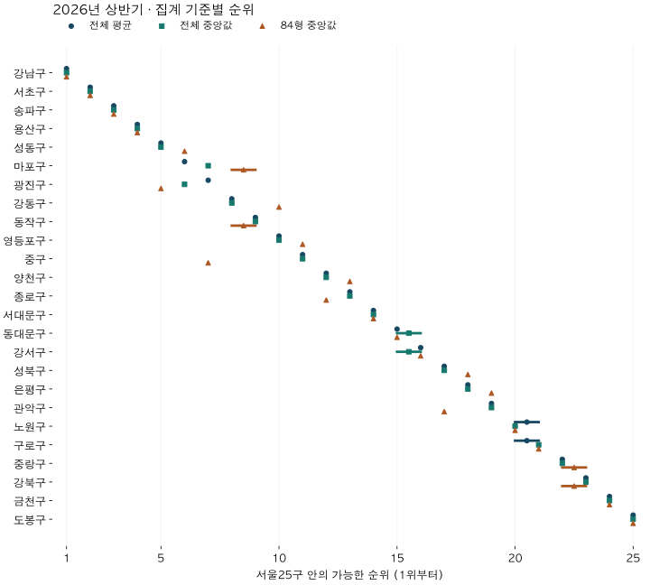

수도권 시장 지도
서울 구별 평당가 순위: 평균·중앙값·84형 비교
2026년 상반기 서울 25구 평당가를 평균·중앙값·84형으로 비교했습니다. 2025년과 경기 부록, 최다 거래 단지 제외 결과로 순위가 달라지는 조건을 확인하세요.
분석 기간 · 2025·2026 상반기 · 서울25구·수집 경기36지역 | 자료 기준일 · 2026-10-04
서울 구별 평당가 순위가 표마다 다르면 어느 숫자가 맞는지부터 고민하게 됩니다. 같은 거래라도 평균을 쓸지, 중앙값을 쓸지, 비교 면적을 제한할지에 따라 순서가 달라집니다. 2026년 상반기 서울 25구의 전용 평당가를 세 가지 방식으로 계산하고, 2025년 같은 기간과 수집 경기 지역도 함께 확인했습니다.
2026년 상반기 광진구는 전체 평균 7위, 전체 중앙값 6위, 84형 중앙값 5위였습니다. 마포구는 각각 6위, 7위, 8~9위였습니다. 다만 면적을 제한해도 거래된 단지 구성이 남습니다. 중구의 84형 순위는 지역별 최다 거래 단지를 하나씩 제외하면 7위에서 12위로 달라졌습니다. 순위표를 볼 때는 대표값·면적·거래 구성을 함께 확인해야 합니다.
1. 기사에 나온 평당가와 같은 숫자일까요?
먼저 기간과 산식을 확인해야 합니다. 매일경제의 2025년 2월 4일 기사는 다방이 국토교통부 실거래 자료로 분석한 2024년 서울 25구 평균 평당가를 소개합니다. 평균으로 지역을 비교하는 실제 예시입니다. 이 글의 2026년 상반기 표와 대상 기간부터 다릅니다.
기사 본문만으로는 전용·공급면적 중 무엇으로 나눴는지와 평균의 상세 산식까지 확인되지 않습니다. 여기서는 원거래금액을 원전용면적으로 나누고 3.3058을 곱한 계약별 전용 평당가를 사용합니다. 기사 수치를 재현했거나 서로 다른 표 중 어느 것이 틀렸다고 판정하는 분석은 아닙니다.
- 전체 평균: 모든 면적의 계약별 전용 평당가를 더한 뒤 계약 수로 나눕니다.
- 전체 중앙값: 같은 계약별 전용 평당가를 정렬해 가운데 값을 고릅니다. 계약이 짝수면 가운데 둘의 평균입니다.
- 84형 중앙값: 84형, 즉 전용 25·26평형 계약만 남기고 중앙값을 구합니다. 정확히 84㎡인 주택만 뜻하지 않습니다.
전체 거래금액을 전체 전용면적으로 나누면 넓은 집에 더 큰 가중치가 붙습니다. 이번 평균은 계약 한 건에 한 표를 주므로 그 계산과 다릅니다. 구의 중위 거래금액을 임의의 대표 면적으로 나누는 방식도 사용하지 않았습니다.
2. 같은 기간에도 서울 구별 순위가 달라집니다
광진구의 전용 평당가는 전체 평균 6,400만~6,450만 원 미만, 전체 중앙값 6,700만~6,750만 원 미만이었습니다. 마포구는 평균이 6,550만~6,600만 원 미만으로 광진구보다 높았지만, 중앙값은 6,100만~6,150만 원 미만으로 더 낮았습니다. 높은 거래가 평균에 미치는 영향과 가운데 거래의 위치가 서로 다르다는 뜻입니다.

| 지역 | 전체 평균 / 순위 | 전체 중앙값 / 순위 | 84형 중앙값 / 순위 |
|---|---|---|---|
| 강남구 | 11,250~11,300 / 1위 | 11,700~11,750 / 1위 | 12,250~12,300 / 1위 |
| 서초구 | 10,300~10,350 / 2위 | 9,000~9,050 / 2위 | 11,650~11,700 / 2위 |
| 송파구 | 8,800~8,850 / 3위 | 8,100~8,150 / 3위 | 9,550~9,600 / 3위 |
| 용산구 | 8,350~8,400 / 4위 | 8,000~8,050 / 4위 | 7,600~7,650 / 4위 |
| 성동구 | 7,800~7,850 / 5위 | 7,600~7,650 / 5위 | 7,000~7,050 / 6위 |
| 마포구 | 6,550~6,600 / 6위 | 6,100~6,150 / 7위 | 5,900~5,950 / 8~9위 |
| 광진구 | 6,400~6,450 / 7위 | 6,700~6,750 / 6위 | 7,100~7,150 / 5위 |
| 강동구 | 6,200~6,250 / 8위 | 6,000~6,050 / 8위 | 5,750~5,800 / 10위 |
| 동작구 | 6,150~6,200 / 9위 | 5,800~5,850 / 9위 | 5,900~5,950 / 8~9위 |
| 영등포구 | 5,750~5,800 / 10위 | 5,600~5,650 / 10위 | 5,050~5,100 / 11위 |
| 중구 | 5,650~5,700 / 11위 | 5,400~5,450 / 11위 | 6,200~6,250 / 7위 |
| 양천구 | 5,450~5,500 / 12위 | 4,500~4,550 / 12위 | 4,450~4,500 / 13위 |
| 종로구 | 5,000~5,050 / 13위 | 4,350~4,400 / 13위 | 4,750~4,800 / 12위 |
| 서대문구 | 4,600~4,650 / 14위 | 4,300~4,350 / 14위 | 4,200~4,250 / 14위 |
| 동대문구 | 4,550~4,600 / 15위 | 4,250~4,300 / 15~16위 | 4,100~4,150 / 15위 |
| 강서구 | 4,450~4,500 / 16위 | 4,250~4,300 / 15~16위 | 3,950~4,000 / 16위 |
| 성북구 | 4,100~4,150 / 17위 | 3,900~3,950 / 17위 | 3,750~3,800 / 18위 |
| 은평구 | 4,000~4,050 / 18위 | 3,700~3,750 / 18위 | 3,550~3,600 / 19위 |
| 관악구 | 3,950~4,000 / 19위 | 3,650~3,700 / 19위 | 3,800~3,850 / 17위 |
| 노원구 | 3,500~3,550 / 20~21위 | 3,450~3,500 / 20위 | 3,250~3,300 / 20위 |
| 구로구 | 3,500~3,550 / 20~21위 | 3,250~3,300 / 21위 | 3,050~3,100 / 21위 |
| 중랑구 | 3,200~3,250 / 22위 | 3,100~3,150 / 22위 | 2,900~2,950 / 22~23위 |
| 강북구 | 3,150~3,200 / 23위 | 3,000~3,050 / 23위 | 2,900~2,950 / 22~23위 |
| 금천구 | 3,100~3,150 / 24위 | 2,800~2,850 / 24위 | 2,800~2,850 / 24위 |
| 도봉구 | 2,850~2,900 / 25위 | 2,750~2,800 / 25위 | 2,350~2,400 / 25위 |
가격은 50만 원 폭의 구간으로 표시했습니다. 예를 들어 6,400~6,450은 전용평당 6,400만 원 이상·6,450만 원 미만입니다. 같은 가격 구간에 들어온 지역끼리는 순서를 확정하지 않아 8~9위처럼 표시합니다. 서로 다른 지표의 순위 범위가 겹치면 확정적인 순위 변화로 읽지 않습니다.
평균이 중앙값보다 항상 높은 것도 아닙니다. 광진구와 강남구에서는 전체 중앙값이 평균보다 높았습니다. 한 가지 모양의 분포를 모든 지역에 가정하면 실제 거래 구성을 놓칠 수 있습니다.
3. 84형만 남기면 같은 집끼리 비교한 것일까요?
면적 차이를 줄였지만 같은 집을 맞춘 비교는 아닙니다. 연식·층·입지와 거래된 단지가 여전히 다릅니다. 중구의 2026년 상반기 전체 면적 중앙값은 55~60㎡ 미만 구간이었고, 위쪽 25%가 시작하는 면적은 80~85㎡ 미만 구간이었습니다. 전체 거래와 84형 거래가 같은 구성을 가진다고 볼 수 없습니다.
중구의 순위는 전체 평균·중앙값에서 각각 11위였지만 84형 중앙값에서는 7위였습니다. 그런데 각 지역·면적 조건에서 가장 많이 거래된 단지를 하나씩 제외하고 다시 비교하면 중구의 84형 순위는 12위였습니다. 가격이 가장 높은 단지를 골라 뺀 것이 아니라 계약 수로 제외 대상을 정했습니다. 전체 면적과 84형의 제외 단지는 서로 다를 수 있습니다.
서울 25구 · 최다 거래 단지 제외 후 순위
| 지역 | 전체 평균 | 전체 중앙값 | 84형 중앙값 |
|---|---|---|---|
| 종로구 | 12~13위 | 12위 | 9위 |
| 중구 | 10위 | 8위 | 12위 |
| 용산구 | 3~4위 | 3위 | 4위 |
| 성동구 | 5위 | 5위 | 5위 |
| 광진구 | 7위 | 6위 | 6위 |
| 동대문구 | 15위 | 15~16위 | 15위 |
| 중랑구 | 22위 | 22~23위 | 23~24위 |
| 성북구 | 17위 | 17위 | 18위 |
| 강북구 | 23~24위 | 22~23위 | 22위 |
| 도봉구 | 25위 | 25위 | 25위 |
| 노원구 | 20~21위 | 20위 | 20위 |
| 은평구 | 18~19위 | 18위 | 19위 |
| 서대문구 | 14위 | 14위 | 14위 |
| 마포구 | 6위 | 7위 | 7위 |
| 양천구 | 12~13위 | 13위 | 13위 |
| 강서구 | 16위 | 15~16위 | 17위 |
| 구로구 | 20~21위 | 21위 | 21위 |
| 금천구 | 23~24위 | 24위 | 23~24위 |
| 영등포구 | 11위 | 11위 | 11위 |
| 동작구 | 8위 | 10위 | 8위 |
| 관악구 | 18~19위 | 19위 | 16위 |
| 서초구 | 2위 | 2위 | 2위 |
| 강남구 | 1위 | 1위 | 1위 |
| 송파구 | 3~4위 | 4위 | 3위 |
| 강동구 | 9위 | 9위 | 10위 |
광진구는 제외 후 평균 7위·중앙값 6위·84형 6위, 마포구는 6위·7위·7위였습니다. 전체 평균과 전체 중앙값의 두 구 순서 차이는 남았지만, 면적을 제한한 순서와 차이의 크기는 달라졌습니다. 대표값을 바꾸는 영향과 특정 단지가 많이 거래된 영향을 함께 봐야 합니다.
면적 분포와 단지 제외 결과는 구성이 중요할 수 있다는 관측 근거입니다. 면적 자체가 가격 차이를 일으켰다는 인과효과는 아닙니다. 단지를 하나 뺀 순위도 ‘진짜 순위’가 아니라 비교 조건을 바꿨을 때 결과가 얼마나 달라지는지 보는 보조 자료입니다.
2025년 상반기 · 전체 면적 거래의 전용면적 분포
| 지역 | 아래25% 경계 | 중앙값 | 아래75% 경계 |
|---|---|---|---|
| 종로구 | 55~60 | 80~85 | 80~85 |
| 중구 | 55~60 | 70~75 | 80~85 |
| 용산구 | 55~60 | 80~85 | 110~115 |
| 성동구 | 55~60 | 80~85 | 80~85 |
| 광진구 | 55~60 | 80~85 | 80~85 |
| 동대문구 | 55~60 | 70~75 | 80~85 |
| 중랑구 | 55~60 | 65~70 | 80~85 |
| 성북구 | 55~60 | 55~60 | 80~85 |
| 강북구 | 55~60 | 60~65 | 80~85 |
| 도봉구 | 50~55 | 60~65 | 80~85 |
| 노원구 | 45~50 | 55~60 | 80~85 |
| 은평구 | 55~60 | 70~75 | 80~85 |
| 서대문구 | 55~60 | 80~85 | 80~85 |
| 마포구 | 55~60 | 80~85 | 80~85 |
| 양천구 | 55~60 | 80~85 | 80~85 |
| 강서구 | 55~60 | 55~60 | 80~85 |
| 구로구 | 55~60 | 65~70 | 80~85 |
| 금천구 | 55~60 | 65~70 | 80~85 |
| 영등포구 | 55~60 | 80~85 | 80~85 |
| 동작구 | 55~60 | 80~85 | 80~85 |
| 관악구 | 55~60 | 70~75 | 80~85 |
| 서초구 | 75~80 | 80~85 | 110~115 |
| 강남구 | 55~60 | 80~85 | 105~110 |
| 송파구 | 55~60 | 80~85 | 80~85 |
| 강동구 | 55~60 | 80~85 | 80~85 |
| 수원시 장안구 | 55~60 | 55~60 | 80~85 |
| 수원시 권선구 | 55~60 | 70~75 | 80~85 |
| 수원시 팔달구 | 55~60 | 55~60 | 80~85 |
| 수원시 영통구 | 55~60 | 80~85 | 80~85 |
| 성남시 수정구 | 55~60 | 75~80 | 80~85 |
| 성남시 중원구 | 50~55 | 55~60 | 80~85 |
| 성남시 분당구 | 55~60 | 80~85 | 100~105 |
| 의정부시 | 55~60 | 60~65 | 80~85 |
| 안양시 만안구 | 55~60 | 60~65 | 80~85 |
| 안양시 동안구 | 50~55 | 55~60 | 80~85 |
| 부천시 원미구 | 50~55 | 55~60 | 80~85 |
| 부천시 소사구 | 55~60 | 70~75 | 80~85 |
| 부천시 오정구 | 45~50 | 55~60 | 70~75 |
| 광명시 | 55~60 | 55~60 | 80~85 |
| 평택시 | 55~60 | 70~75 | 80~85 |
| 안산시 상록구 | 55~60 | 70~75 | 80~85 |
| 안산시 단원구 | 50~55 | 60~65 | 80~85 |
| 고양시 덕양구 | 55~60 | 70~75 | 80~85 |
| 고양시 일산동구 | 55~60 | 80~85 | 80~85 |
| 고양시 일산서구 | 55~60 | 80~85 | 80~85 |
| 과천시 | 55~60 | 80~85 | 80~85 |
| 구리시 | 55~60 | 60~65 | 80~85 |
| 남양주시 | 55~60 | 80~85 | 80~85 |
| 군포시 | 50~55 | 55~60 | 80~85 |
| 의왕시 | 55~60 | 80~85 | 80~85 |
| 하남시 | 55~60 | 80~85 | 80~85 |
| 용인시 처인구 | 55~60 | 70~75 | 80~85 |
| 용인시 기흥구 | 70~75 | 80~85 | 80~85 |
| 용인시 수지구 | 55~60 | 80~85 | 100~105 |
| 파주시 | 55~60 | 80~85 | 80~85 |
| 김포시 | 65~70 | 80~85 | 80~85 |
| 화성시 만세구 | 70~75 | 80~85 | 80~85 |
| 화성시 효행구 | 55~60 | 80~85 | 80~85 |
| 화성시 병점구 | 55~60 | 80~85 | 80~85 |
| 화성시 동탄구 | 55~60 | 80~85 | 80~85 |
| 광주시 | 70~75 | 80~85 | 80~85 |
2026년 상반기 · 전체 면적 거래의 전용면적 분포
| 지역 | 아래25% 경계 | 중앙값 | 아래75% 경계 |
|---|---|---|---|
| 종로구 | 50~55 | 75~80 | 80~85 |
| 중구 | 55~60 | 55~60 | 80~85 |
| 용산구 | 55~60 | 80~85 | 110~115 |
| 성동구 | 55~60 | 80~85 | 80~85 |
| 광진구 | 55~60 | 75~80 | 80~85 |
| 동대문구 | 55~60 | 80~85 | 80~85 |
| 중랑구 | 55~60 | 70~75 | 80~85 |
| 성북구 | 55~60 | 80~85 | 80~85 |
| 강북구 | 55~60 | 80~85 | 80~85 |
| 도봉구 | 45~50 | 60~65 | 80~85 |
| 노원구 | 45~50 | 55~60 | 80~85 |
| 은평구 | 55~60 | 80~85 | 80~85 |
| 서대문구 | 55~60 | 80~85 | 80~85 |
| 마포구 | 55~60 | 80~85 | 80~85 |
| 양천구 | 55~60 | 80~85 | 80~85 |
| 강서구 | 50~55 | 65~70 | 80~85 |
| 구로구 | 55~60 | 70~75 | 80~85 |
| 금천구 | 55~60 | 70~75 | 80~85 |
| 영등포구 | 55~60 | 75~80 | 80~85 |
| 동작구 | 55~60 | 80~85 | 80~85 |
| 관악구 | 55~60 | 80~85 | 80~85 |
| 서초구 | 55~60 | 80~85 | 110~115 |
| 강남구 | 55~60 | 80~85 | 105~110 |
| 송파구 | 55~60 | 80~85 | 80~85 |
| 강동구 | 55~60 | 80~85 | 80~85 |
| 수원시 장안구 | 55~60 | 55~60 | 80~85 |
| 수원시 권선구 | 55~60 | 70~75 | 80~85 |
| 수원시 팔달구 | 55~60 | 55~60 | 80~85 |
| 수원시 영통구 | 55~60 | 70~75 | 80~85 |
| 성남시 수정구 | 55~60 | 70~75 | 80~85 |
| 성남시 중원구 | 50~55 | 55~60 | 80~85 |
| 성남시 분당구 | 50~55 | 70~75 | 95~100 |
| 의정부시 | 55~60 | 60~65 | 80~85 |
| 안양시 만안구 | 55~60 | 60~65 | 80~85 |
| 안양시 동안구 | 45~50 | 55~60 | 80~85 |
| 부천시 원미구 | 55~60 | 65~70 | 80~85 |
| 부천시 소사구 | 55~60 | 70~75 | 80~85 |
| 부천시 오정구 | 40~45 | 55~60 | 75~80 |
| 광명시 | 55~60 | 70~75 | 80~85 |
| 평택시 | 55~60 | 75~80 | 80~85 |
| 안산시 상록구 | 55~60 | 70~75 | 80~85 |
| 안산시 단원구 | 50~55 | 60~65 | 80~85 |
| 고양시 덕양구 | 55~60 | 80~85 | 80~85 |
| 고양시 일산동구 | 55~60 | 80~85 | 100~105 |
| 고양시 일산서구 | 55~60 | 75~80 | 80~85 |
| 과천시 | 55~60 | 80~85 | 80~85 |
| 구리시 | 55~60 | 70~75 | 80~85 |
| 남양주시 | 55~60 | 80~85 | 80~85 |
| 군포시 | 50~55 | 55~60 | 80~85 |
| 의왕시 | 55~60 | 80~85 | 80~85 |
| 하남시 | 55~60 | 80~85 | 80~85 |
| 용인시 처인구 | 55~60 | 70~75 | 80~85 |
| 용인시 기흥구 | 75~80 | 80~85 | 85~90 |
| 용인시 수지구 | 55~60 | 80~85 | 120~125 |
| 파주시 | 55~60 | 80~85 | 80~85 |
| 김포시 | 55~60 | 80~85 | 80~85 |
| 화성시 만세구 | 70~75 | 80~85 | 80~85 |
| 화성시 효행구 | 55~60 | 80~85 | 80~85 |
| 화성시 병점구 | 55~60 | 80~85 | 80~85 |
| 화성시 동탄구 | 70~75 | 80~85 | 80~85 |
| 광주시 | 70~75 | 80~85 | 80~85 |
4. 지난해와 경기에서도 같은 순서일까요?
아래 부록은 두 상반기를 모두 보존하며 서울·수집 경기의 61개 지역을 함께 비교합니다. 위의 서울 25구 안 순위와 부록의 순위는 비교 대상이 다릅니다. 2025년에는 세 지표가 모두 충분한 60지역, 2026년에는 61지역이 공통 비교에 들어갔습니다. 빠진 지역의 다른 가격이 계산돼도 순위에는 섞지 않았습니다.
이 표에서 서로 다른 연도의 순위를 곧바로 빼면 비교 대상의 변화가 섞입니다. 장기 순위 이동을 알고 싶다면 두 기간의 같은 비교 대상을 맞춘 지역 순위 글을 함께 보세요. 이번 글의 중심 질문은 각 기간 안에서 대표값과 면적을 바꾸면 순서가 어떻게 달라지는가입니다.
2025년 상반기 · 전체 거래
| 지역 | 전체 평균 / 순위 | 전체 중앙값 / 순위 | 84형 중앙값 / 순위 |
|---|---|---|---|
| 종로구 | 5,150~5,200 / 14위 | 4,700~4,750 / 16위 | 5,300~5,350 / 10~11위 |
| 중구 | 5,100~5,150 / 15위 | 5,150~5,200 / 13위 | 5,100~5,150 / 13위 |
| 용산구 | 7,800~7,850 / 4위 | 7,500~7,550 / 4위 | 6,650~6,700 / 5위 |
| 성동구 | 6,750~6,800 / 6위 | 6,450~6,500 / 6위 | 6,350~6,400 / 6위 |
| 광진구 | 5,700~5,750 / 8~9위 | 5,750~5,800 / 8위 | 5,750~5,800 / 8위 |
| 동대문구 | 4,100~4,150 / 18~19위 | 3,900~3,950 / 20위 | 3,650~3,700 / 20위 |
| 중랑구 | 3,000~3,050 / 30~34위 | 2,900~2,950 / 33위 | 2,750~2,800 / 33~34위 |
| 성북구 | 3,800~3,850 / 21위 | 3,700~3,750 / 22위 | 3,400~3,450 / 24위 |
| 강북구 | 3,000~3,050 / 30~34위 | 2,950~3,000 / 31~32위 | 2,800~2,850 / 32위 |
| 도봉구 | 2,650~2,700 / 38위 | 2,500~2,550 / 39위 | 2,150~2,200 / 42~43위 |
| 노원구 | 3,250~3,300 / 27~28위 | 3,200~3,250 / 27~28위 | 3,100~3,150 / 27~28위 |
| 은평구 | 3,750~3,800 / 22위 | 3,650~3,700 / 23위 | 3,450~3,500 / 23위 |
| 서대문구 | 4,550~4,600 / 17위 | 4,500~4,550 / 17위 | 4,550~4,600 / 17위 |
| 마포구 | 6,400~6,450 / 7위 | 6,250~6,300 / 7위 | 6,200~6,250 / 7위 |
| 양천구 | 5,700~5,750 / 8~9위 | 5,250~5,300 / 10~11위 | 4,800~4,850 / 14위 |
| 강서구 | 4,100~4,150 / 18~19위 | 4,000~4,050 / 18위 | 3,800~3,850 / 18위 |
| 구로구 | 3,250~3,300 / 27~28위 | 3,200~3,250 / 27~28위 | 3,150~3,200 / 25~26위 |
| 금천구 | 2,850~2,900 / 36위 | 2,550~2,600 / 38위 | 2,500~2,550 / 37위 |
| 영등포구 | 5,250~5,300 / 13위 | 4,900~4,950 / 15위 | 4,700~4,750 / 15위 |
| 동작구 | 5,350~5,400 / 12위 | 5,200~5,250 / 12위 | 5,150~5,200 / 12위 |
| 관악구 | 3,650~3,700 / 24위 | 3,500~3,550 / 24위 | 3,500~3,550 / 22위 |
| 서초구 | 10,050~10,100 / 2위 | 9,300~9,350 / 2위 | 10,550~10,600 / 1위 |
| 강남구 | 10,550~10,600 / 1위 | 10,250~10,300 / 1위 | 9,850~9,900 / 2위 |
| 송파구 | 7,650~7,700 / 5위 | 6,900~6,950 / 5위 | 8,350~8,400 / 3위 |
| 강동구 | 5,450~5,500 / 10위 | 5,250~5,300 / 10~11위 | 5,300~5,350 / 10~11위 |
| 수원시 장안구 | 2,250~2,300 / 42위 | 2,050~2,100 / 44~45위 | 2,050~2,100 / 44~46위 |
| 수원시 권선구 | 2,000~2,050 / 47~48위 | 1,950~2,000 / 46위 | 2,050~2,100 / 44~46위 |
| 수원시 팔달구 | 2,600~2,650 / 39위 | 2,650~2,700 / 36위 | 2,400~2,450 / 38~39위 |
| 수원시 영통구 | 3,000~3,050 / 30~34위 | 2,600~2,650 / 37위 | 2,950~3,000 / 31위 |
| 성남시 수정구 | 4,750~4,800 / 16위 | 5,000~5,050 / 14위 | 4,600~4,650 / 16위 |
| 성남시 중원구 | 3,700~3,750 / 23위 | 3,850~3,900 / 21위 | 3,100~3,150 / 27~28위 |
| 성남시 분당구 | 5,400~5,450 / 11위 | 5,350~5,400 / 9위 | 5,600~5,650 / 9위 |
| 의정부시 | 1,550~1,600 / 55위 | 1,450~1,500 / 56위 | 1,500~1,550 / 54위 |
| 안양시 만안구 | 2,700~2,750 / 37위 | 2,800~2,850 / 35위 | 2,350~2,400 / 40위 |
| 안양시 동안구 | 3,350~3,400 / 26위 | 3,350~3,400 / 25~26위 | 3,050~3,100 / 29위 |
| 부천시 원미구 | 2,400~2,450 / 40위 | 2,400~2,450 / 40위 | 2,600~2,650 / 36위 |
| 부천시 소사구 | 2,200~2,250 / 43~44위 | 2,150~2,200 / 41~42위 | 2,250~2,300 / 41위 |
| 부천시 오정구 | 1,700~1,750 / 비교 제외 | 1,600~1,650 / 비교 제외 | 자료 부족 / 비교 제외 |
| 광명시 | 3,550~3,600 / 25위 | 3,350~3,400 / 25~26위 | 3,600~3,650 / 21위 |
| 평택시 | 1,350~1,400 / 60위 | 1,300~1,350 / 59~60위 | 1,350~1,400 / 58~59위 |
| 안산시 상록구 | 1,750~1,800 / 52~53위 | 1,750~1,800 / 49~51위 | 1,800~1,850 / 49위 |
| 안산시 단원구 | 2,150~2,200 / 45~46위 | 1,900~1,950 / 47위 | 1,950~2,000 / 48위 |
| 고양시 덕양구 | 2,300~2,350 / 41위 | 2,100~2,150 / 43위 | 2,400~2,450 / 38~39위 |
| 고양시 일산동구 | 2,000~2,050 / 47~48위 | 1,850~1,900 / 48위 | 2,000~2,050 / 47위 |
| 고양시 일산서구 | 1,700~1,750 / 54위 | 1,650~1,700 / 53위 | 1,550~1,600 / 52~53위 |
| 과천시 | 8,150~8,200 / 3위 | 8,150~8,200 / 3위 | 7,750~7,800 / 4위 |
| 구리시 | 3,000~3,050 / 30~34위 | 3,000~3,050 / 30위 | 2,750~2,800 / 33~34위 |
| 남양주시 | 1,950~2,000 / 49위 | 1,750~1,800 / 49~51위 | 1,750~1,800 / 50~51위 |
| 군포시 | 2,200~2,250 / 43~44위 | 2,150~2,200 / 41~42위 | 2,050~2,100 / 44~46위 |
| 의왕시 | 2,950~3,000 / 35위 | 2,950~3,000 / 31~32위 | 3,000~3,050 / 30위 |
| 하남시 | 3,850~3,900 / 20위 | 3,950~4,000 / 19위 | 3,700~3,750 / 19위 |
| 용인시 처인구 | 1,500~1,550 / 56~58위 | 1,400~1,450 / 57위 | 1,350~1,400 / 58~59위 |
| 용인시 기흥구 | 2,150~2,200 / 45~46위 | 2,050~2,100 / 44~45위 | 2,150~2,200 / 42~43위 |
| 용인시 수지구 | 3,150~3,200 / 29위 | 3,050~3,100 / 29위 | 3,150~3,200 / 25~26위 |
| 파주시 | 1,500~1,550 / 56~58위 | 1,350~1,400 / 58위 | 1,450~1,500 / 55~57위 |
| 김포시 | 1,850~1,900 / 50위 | 1,750~1,800 / 49~51위 | 1,750~1,800 / 50~51위 |
| 화성시 만세구 | 1,500~1,550 / 56~58위 | 1,550~1,600 / 54~55위 | 1,550~1,600 / 52~53위 |
| 화성시 효행구 | 1,400~1,450 / 59위 | 1,300~1,350 / 59~60위 | 1,250~1,300 / 60위 |
| 화성시 병점구 | 1,800~1,850 / 51위 | 1,550~1,600 / 54~55위 | 1,450~1,500 / 55~57위 |
| 화성시 동탄구 | 3,000~3,050 / 30~34위 | 2,850~2,900 / 34위 | 2,700~2,750 / 35위 |
| 광주시 | 1,750~1,800 / 52~53위 | 1,700~1,750 / 52위 | 1,450~1,500 / 55~57위 |
2025년 상반기 · 지역·면적별 최다 거래 단지 하나 제외
| 지역 | 전체 평균 / 순위 | 전체 중앙값 / 순위 | 84형 중앙값 / 순위 |
|---|---|---|---|
| 종로구 | 5,200~5,250 / 13~14위 | 4,550~4,600 / 16위 | 8,050~8,100 / 4위 |
| 중구 | 5,050~5,100 / 15위 | 5,050~5,100 / 13위 | 5,050~5,100 / 12~13위 |
| 용산구 | 7,700~7,750 / 4위 | 7,250~7,300 / 4위 | 6,900~6,950 / 6위 |
| 성동구 | 6,700~6,750 / 6위 | 6,350~6,400 / 6위 | 6,200~6,250 / 7위 |
| 광진구 | 5,650~5,700 / 8위 | 5,750~5,800 / 8위 | 5,700~5,750 / 9위 |
| 동대문구 | 4,050~4,100 / 18~19위 | 3,850~3,900 / 20위 | 3,500~3,550 / 20~21위 |
| 중랑구 | 3,000~3,050 / 30~32위 | 2,900~2,950 / 32~33위 | 2,750~2,800 / 33~34위 |
| 성북구 | 3,850~3,900 / 20~21위 | 3,700~3,750 / 21~22위 | 3,450~3,500 / 22~23위 |
| 강북구 | 3,000~3,050 / 30~32위 | 2,950~3,000 / 30~31위 | 2,900~2,950 / 30~31위 |
| 도봉구 | 2,700~2,750 / 37위 | 2,650~2,700 / 35~37위 | 2,150~2,200 / 42위 |
| 노원구 | 3,250~3,300 / 27~28위 | 3,200~3,250 / 27~28위 | 3,050~3,100 / 28위 |
| 은평구 | 3,600~3,650 / 22~24위 | 3,500~3,550 / 23~24위 | 3,350~3,400 / 24위 |
| 서대문구 | 4,550~4,600 / 17위 | 4,400~4,450 / 17위 | 4,350~4,400 / 16위 |
| 마포구 | 6,350~6,400 / 7위 | 6,200~6,250 / 7위 | 6,100~6,150 / 8위 |
| 양천구 | 5,600~5,650 / 9위 | 5,100~5,150 / 12위 | 4,600~4,650 / 15위 |
| 강서구 | 4,050~4,100 / 18~19위 | 3,950~4,000 / 18~19위 | 3,750~3,800 / 18~19위 |
| 구로구 | 3,250~3,300 / 27~28위 | 3,200~3,250 / 27~28위 | 3,150~3,200 / 25위 |
| 금천구 | 2,900~2,950 / 35~36위 | 2,650~2,700 / 35~37위 | 2,600~2,650 / 36위 |
| 영등포구 | 5,200~5,250 / 13~14위 | 4,850~4,900 / 14위 | 4,650~4,700 / 14위 |
| 동작구 | 5,350~5,400 / 11위 | 5,150~5,200 / 10~11위 | 5,050~5,100 / 12~13위 |
| 관악구 | 3,600~3,650 / 22~24위 | 3,500~3,550 / 23~24위 | 3,450~3,500 / 22~23위 |
| 서초구 | 9,800~9,850 / 2위 | 8,850~8,900 / 2위 | 10,250~10,300 / 1위 |
| 강남구 | 10,450~10,500 / 1위 | 10,100~10,150 / 1위 | 9,700~9,750 / 2위 |
| 송파구 | 7,500~7,550 / 5위 | 6,600~6,650 / 5위 | 7,250~7,300 / 5위 |
| 강동구 | 5,250~5,300 / 12위 | 5,150~5,200 / 10~11위 | 5,150~5,200 / 11위 |
| 수원시 장안구 | 2,200~2,250 / 42~43위 | 2,000~2,050 / 45위 | 2,000~2,050 / 45~46위 |
| 수원시 권선구 | 2,000~2,050 / 47위 | 1,900~1,950 / 47위 | 2,000~2,050 / 45~46위 |
| 수원시 팔달구 | 2,500~2,550 / 38~39위 | 2,550~2,600 / 38위 | 2,300~2,350 / 39~40위 |
| 수원시 영통구 | 3,000~3,050 / 30~32위 | 2,650~2,700 / 35~37위 | 2,850~2,900 / 32위 |
| 성남시 수정구 | 4,650~4,700 / 16위 | 4,800~4,850 / 15위 | 4,250~4,300 / 17위 |
| 성남시 중원구 | 3,600~3,650 / 22~24위 | 3,700~3,750 / 21~22위 | 3,000~3,050 / 29위 |
| 성남시 분당구 | 5,400~5,450 / 10위 | 5,350~5,400 / 9위 | 5,550~5,600 / 10위 |
| 의정부시 | 1,550~1,600 / 55~56위 | 1,450~1,500 / 56위 | 1,500~1,550 / 53~54위 |
| 안양시 만안구 | 2,500~2,550 / 38~39위 | 2,450~2,500 / 39위 | 2,200~2,250 / 41위 |
| 안양시 동안구 | 3,300~3,350 / 26위 | 3,250~3,300 / 25~26위 | 3,100~3,150 / 26~27위 |
| 부천시 원미구 | 2,400~2,450 / 40위 | 2,350~2,400 / 40위 | 2,550~2,600 / 37위 |
| 부천시 소사구 | 2,150~2,200 / 44~46위 | 2,100~2,150 / 41~43위 | 2,300~2,350 / 39~40위 |
| 부천시 오정구 | 1,700~1,750 / 비교 제외 | 1,650~1,700 / 비교 제외 | 자료 부족 / 비교 제외 |
| 광명시 | 3,500~3,550 / 25위 | 3,250~3,300 / 25~26위 | 3,500~3,550 / 20~21위 |
| 평택시 | 1,350~1,400 / 59~60위 | 1,300~1,350 / 58~59위 | 1,400~1,450 / 56~58위 |
| 안산시 상록구 | 1,700~1,750 / 52~53위 | 1,700~1,750 / 51위 | 1,650~1,700 / 51위 |
| 안산시 단원구 | 2,150~2,200 / 44~46위 | 1,950~2,000 / 46위 | 1,900~1,950 / 47위 |
| 고양시 덕양구 | 2,300~2,350 / 41위 | 2,100~2,150 / 41~43위 | 2,350~2,400 / 38위 |
| 고양시 일산동구 | 1,950~2,000 / 48~49위 | 1,800~1,850 / 48위 | 1,850~1,900 / 48위 |
| 고양시 일산서구 | 1,650~1,700 / 54위 | 1,600~1,650 / 53~54위 | 1,500~1,550 / 53~54위 |
| 과천시 | 8,500~8,550 / 3위 | 8,550~8,600 / 3위 | 8,150~8,200 / 3위 |
| 구리시 | 2,950~3,000 / 33~34위 | 2,950~3,000 / 30~31위 | 2,750~2,800 / 33~34위 |
| 남양주시 | 1,950~2,000 / 48~49위 | 1,750~1,800 / 49~50위 | 1,750~1,800 / 49위 |
| 군포시 | 2,200~2,250 / 42~43위 | 2,100~2,150 / 41~43위 | 2,050~2,100 / 44위 |
| 의왕시 | 2,900~2,950 / 35~36위 | 2,900~2,950 / 32~33위 | 2,900~2,950 / 30~31위 |
| 하남시 | 3,850~3,900 / 20~21위 | 3,950~4,000 / 18~19위 | 3,750~3,800 / 18~19위 |
| 용인시 처인구 | 1,500~1,550 / 57위 | 1,350~1,400 / 57위 | 1,250~1,300 / 59~60위 |
| 용인시 기흥구 | 2,150~2,200 / 44~46위 | 2,050~2,100 / 44위 | 2,100~2,150 / 43위 |
| 용인시 수지구 | 3,100~3,150 / 29위 | 3,000~3,050 / 29위 | 3,100~3,150 / 26~27위 |
| 파주시 | 1,450~1,500 / 58위 | 1,300~1,350 / 58~59위 | 1,400~1,450 / 56~58위 |
| 김포시 | 1,800~1,850 / 50~51위 | 1,750~1,800 / 49~50위 | 1,700~1,750 / 50위 |
| 화성시 만세구 | 1,550~1,600 / 55~56위 | 1,550~1,600 / 55위 | 1,550~1,600 / 52위 |
| 화성시 효행구 | 1,350~1,400 / 59~60위 | 1,250~1,300 / 60위 | 1,250~1,300 / 59~60위 |
| 화성시 병점구 | 1,800~1,850 / 50~51위 | 1,600~1,650 / 53~54위 | 1,450~1,500 / 55위 |
| 화성시 동탄구 | 2,950~3,000 / 33~34위 | 2,800~2,850 / 34위 | 2,650~2,700 / 35위 |
| 광주시 | 1,700~1,750 / 52~53위 | 1,650~1,700 / 52위 | 1,400~1,450 / 56~58위 |
2026년 상반기 · 전체 거래
| 지역 | 전체 평균 / 순위 | 전체 중앙값 / 순위 | 84형 중앙값 / 순위 |
|---|---|---|---|
| 종로구 | 5,000~5,050 / 16위 | 4,350~4,400 / 17위 | 4,750~4,800 / 14위 |
| 중구 | 5,650~5,700 / 13위 | 5,400~5,450 / 14위 | 6,200~6,250 / 9위 |
| 용산구 | 8,350~8,400 / 5위 | 8,000~8,050 / 5위 | 7,600~7,650 / 5위 |
| 성동구 | 7,800~7,850 / 6위 | 7,600~7,650 / 6위 | 7,000~7,050 / 7위 |
| 광진구 | 6,400~6,450 / 9위 | 6,700~6,750 / 8위 | 7,100~7,150 / 6위 |
| 동대문구 | 4,550~4,600 / 18위 | 4,250~4,300 / 19~20위 | 4,100~4,150 / 19위 |
| 중랑구 | 3,200~3,250 / 32~33위 | 3,100~3,150 / 32~33위 | 2,900~2,950 / 32~34위 |
| 성북구 | 4,100~4,150 / 21위 | 3,900~3,950 / 21위 | 3,750~3,800 / 22위 |
| 강북구 | 3,150~3,200 / 34위 | 3,000~3,050 / 34~35위 | 2,900~2,950 / 32~34위 |
| 도봉구 | 2,850~2,900 / 39위 | 2,750~2,800 / 38~39위 | 2,350~2,400 / 41~43위 |
| 노원구 | 3,500~3,550 / 27~28위 | 3,450~3,500 / 27위 | 3,250~3,300 / 27~28위 |
| 은평구 | 4,000~4,050 / 22~24위 | 3,700~3,750 / 24위 | 3,550~3,600 / 24위 |
| 서대문구 | 4,600~4,650 / 17위 | 4,300~4,350 / 18위 | 4,200~4,250 / 18위 |
| 마포구 | 6,550~6,600 / 8위 | 6,100~6,150 / 9위 | 5,900~5,950 / 10~11위 |
| 양천구 | 5,450~5,500 / 14위 | 4,500~4,550 / 16위 | 4,450~4,500 / 15~16위 |
| 강서구 | 4,450~4,500 / 19위 | 4,250~4,300 / 19~20위 | 3,950~4,000 / 20위 |
| 구로구 | 3,500~3,550 / 27~28위 | 3,250~3,300 / 29~30위 | 3,050~3,100 / 29~30위 |
| 금천구 | 3,100~3,150 / 35~37위 | 2,800~2,850 / 37위 | 2,800~2,850 / 36~37위 |
| 영등포구 | 5,750~5,800 / 12위 | 5,600~5,650 / 12위 | 5,050~5,100 / 13위 |
| 동작구 | 6,150~6,200 / 11위 | 5,800~5,850 / 11위 | 5,900~5,950 / 10~11위 |
| 관악구 | 3,950~4,000 / 25위 | 3,650~3,700 / 25~26위 | 3,800~3,850 / 21위 |
| 서초구 | 10,300~10,350 / 2위 | 9,000~9,050 / 3위 | 11,650~11,700 / 2위 |
| 강남구 | 11,250~11,300 / 1위 | 11,700~11,750 / 1위 | 12,250~12,300 / 1위 |
| 송파구 | 8,800~8,850 / 4위 | 8,100~8,150 / 4위 | 9,550~9,600 / 3위 |
| 강동구 | 6,200~6,250 / 10위 | 6,000~6,050 / 10위 | 5,750~5,800 / 12위 |
| 수원시 장안구 | 2,600~2,650 / 40위 | 2,350~2,400 / 41~43위 | 2,300~2,350 / 44~46위 |
| 수원시 권선구 | 2,150~2,200 / 48~49위 | 2,150~2,200 / 46~47위 | 2,150~2,200 / 48~49위 |
| 수원시 팔달구 | 3,100~3,150 / 35~37위 | 3,250~3,300 / 29~30위 | 2,650~2,700 / 38위 |
| 수원시 영통구 | 3,100~3,150 / 35~37위 | 2,750~2,800 / 38~39위 | 2,950~3,000 / 31위 |
| 성남시 수정구 | 5,050~5,100 / 15위 | 5,500~5,550 / 13위 | 4,450~4,500 / 15~16위 |
| 성남시 중원구 | 4,000~4,050 / 22~24위 | 3,650~3,700 / 25~26위 | 3,300~3,350 / 26위 |
| 성남시 분당구 | 7,150~7,200 / 7위 | 7,150~7,200 / 7위 | 6,850~6,900 / 8위 |
| 의정부시 | 1,700~1,750 / 55~57위 | 1,550~1,600 / 57~58위 | 1,550~1,600 / 54~58위 |
| 안양시 만안구 | 2,950~3,000 / 38위 | 2,950~3,000 / 36위 | 2,450~2,500 / 40위 |
| 안양시 동안구 | 3,900~3,950 / 26위 | 3,850~3,900 / 22~23위 | 3,450~3,500 / 25위 |
| 부천시 원미구 | 2,500~2,550 / 42위 | 2,450~2,500 / 40위 | 2,600~2,650 / 39위 |
| 부천시 소사구 | 2,400~2,450 / 43~44위 | 2,350~2,400 / 41~43위 | 2,350~2,400 / 41~43위 |
| 부천시 오정구 | 1,800~1,850 / 53~54위 | 1,650~1,700 / 54~56위 | 2,300~2,350 / 44~46위 |
| 광명시 | 4,000~4,050 / 22~24위 | 3,850~3,900 / 22~23위 | 3,250~3,300 / 27~28위 |
| 평택시 | 1,400~1,450 / 61위 | 1,300~1,350 / 61위 | 1,350~1,400 / 60위 |
| 안산시 상록구 | 1,800~1,850 / 53~54위 | 1,750~1,800 / 52~53위 | 1,850~1,900 / 51위 |
| 안산시 단원구 | 2,300~2,350 / 46위 | 2,150~2,200 / 46~47위 | 2,100~2,150 / 50위 |
| 고양시 덕양구 | 2,550~2,600 / 41위 | 2,350~2,400 / 41~43위 | 2,800~2,850 / 36~37위 |
| 고양시 일산동구 | 2,150~2,200 / 48~49위 | 1,900~1,950 / 49위 | 2,300~2,350 / 44~46위 |
| 고양시 일산서구 | 1,700~1,750 / 55~57위 | 1,650~1,700 / 54~56위 | 1,550~1,600 / 54~58위 |
| 과천시 | 9,600~9,650 / 3위 | 9,550~9,600 / 2위 | 9,100~9,150 / 4위 |
| 구리시 | 3,300~3,350 / 30~31위 | 3,200~3,250 / 31위 | 2,850~2,900 / 35위 |
| 남양주시 | 2,250~2,300 / 47위 | 2,000~2,050 / 48위 | 2,250~2,300 / 47위 |
| 군포시 | 2,350~2,400 / 45위 | 2,250~2,300 / 44~45위 | 2,150~2,200 / 48~49위 |
| 의왕시 | 3,200~3,250 / 32~33위 | 3,100~3,150 / 32~33위 | 3,050~3,100 / 29~30위 |
| 하남시 | 4,400~4,450 / 20위 | 4,550~4,600 / 15위 | 4,300~4,350 / 17위 |
| 용인시 처인구 | 1,700~1,750 / 55~57위 | 1,650~1,700 / 54~56위 | 1,550~1,600 / 54~58위 |
| 용인시 기흥구 | 2,400~2,450 / 43~44위 | 2,250~2,300 / 44~45위 | 2,350~2,400 / 41~43위 |
| 용인시 수지구 | 3,450~3,500 / 29위 | 3,300~3,350 / 28위 | 3,600~3,650 / 23위 |
| 파주시 | 1,650~1,700 / 58위 | 1,500~1,550 / 59위 | 1,550~1,600 / 54~58위 |
| 김포시 | 1,850~1,900 / 52위 | 1,800~1,850 / 51위 | 1,750~1,800 / 52위 |
| 화성시 만세구 | 1,500~1,550 / 60위 | 1,550~1,600 / 57~58위 | 1,500~1,550 / 59위 |
| 화성시 효행구 | 1,600~1,650 / 59위 | 1,450~1,500 / 60위 | 1,300~1,350 / 61위 |
| 화성시 병점구 | 2,100~2,150 / 50위 | 1,750~1,800 / 52~53위 | 1,700~1,750 / 53위 |
| 화성시 동탄구 | 3,300~3,350 / 30~31위 | 3,000~3,050 / 34~35위 | 2,900~2,950 / 32~34위 |
| 광주시 | 1,900~1,950 / 51위 | 1,850~1,900 / 50위 | 1,550~1,600 / 54~58위 |
2026년 상반기 · 지역·면적별 최다 거래 단지 하나 제외
| 지역 | 전체 평균 / 순위 | 전체 중앙값 / 순위 | 84형 중앙값 / 순위 |
|---|---|---|---|
| 종로구 | 5,150~5,200 / 14~15위 | 4,550~4,600 / 15~16위 | 5,600~5,650 / 11위 |
| 중구 | 5,800~5,850 / 12위 | 6,000~6,050 / 10위 | 4,900~4,950 / 14위 |
| 용산구 | 8,400~8,450 / 4~5위 | 8,000~8,050 / 4위 | 7,950~8,000 / 5위 |
| 성동구 | 7,850~7,900 / 6위 | 7,650~7,700 / 6위 | 7,100~7,150 / 6위 |
| 광진구 | 6,250~6,300 / 9위 | 6,550~6,600 / 8위 | 6,900~6,950 / 7~8위 |
| 동대문구 | 4,550~4,600 / 18위 | 4,200~4,250 / 19~20위 | 4,000~4,050 / 18위 |
| 중랑구 | 3,200~3,250 / 32위 | 3,050~3,100 / 31~33위 | 2,900~2,950 / 34~35위 |
| 성북구 | 4,150~4,200 / 21위 | 4,000~4,050 / 21위 | 3,800~3,850 / 21위 |
| 강북구 | 3,150~3,200 / 33~36위 | 3,050~3,100 / 31~33위 | 3,000~3,050 / 30~31위 |
| 도봉구 | 2,850~2,900 / 38위 | 2,650~2,700 / 38위 | 2,450~2,500 / 40위 |
| 노원구 | 3,500~3,550 / 27~28위 | 3,450~3,500 / 27위 | 3,200~3,250 / 27~28위 |
| 은평구 | 3,900~3,950 / 24~25위 | 3,650~3,700 / 24위 | 3,500~3,550 / 24~25위 |
| 서대문구 | 4,600~4,650 / 17위 | 4,250~4,300 / 18위 | 4,050~4,100 / 17위 |
| 마포구 | 6,650~6,700 / 8위 | 6,250~6,300 / 9위 | 5,950~6,000 / 9위 |
| 양천구 | 5,150~5,200 / 14~15위 | 4,400~4,450 / 17위 | 4,250~4,300 / 16위 |
| 강서구 | 4,400~4,450 / 19~20위 | 4,200~4,250 / 19~20위 | 3,900~3,950 / 20위 |
| 구로구 | 3,500~3,550 / 27~28위 | 3,250~3,300 / 29위 | 3,050~3,100 / 29위 |
| 금천구 | 3,150~3,200 / 33~36위 | 2,900~2,950 / 36위 | 2,900~2,950 / 34~35위 |
| 영등포구 | 5,750~5,800 / 13위 | 5,600~5,650 / 13위 | 5,150~5,200 / 13위 |
| 동작구 | 6,150~6,200 / 10위 | 5,800~5,850 / 12위 | 5,800~5,850 / 10위 |
| 관악구 | 3,900~3,950 / 24~25위 | 3,550~3,600 / 26위 | 3,950~4,000 / 19위 |
| 서초구 | 10,000~10,050 / 2위 | 8,800~8,850 / 3위 | 11,100~11,150 / 2위 |
| 강남구 | 11,100~11,150 / 1위 | 11,550~11,600 / 1위 | 11,700~11,750 / 1위 |
| 송파구 | 8,400~8,450 / 4~5위 | 7,850~7,900 / 5위 | 8,400~8,450 / 4위 |
| 강동구 | 5,850~5,900 / 11위 | 5,850~5,900 / 11위 | 5,550~5,600 / 12위 |
| 수원시 장안구 | 2,600~2,650 / 40위 | 2,350~2,400 / 41~42위 | 2,250~2,300 / 44위 |
| 수원시 권선구 | 2,100~2,150 / 48위 | 2,100~2,150 / 46~47위 | 2,100~2,150 / 48위 |
| 수원시 팔달구 | 2,900~2,950 / 37위 | 3,050~3,100 / 31~33위 | 2,800~2,850 / 36~37위 |
| 수원시 영통구 | 3,150~3,200 / 33~36위 | 2,800~2,850 / 37위 | 2,950~3,000 / 32~33위 |
| 성남시 수정구 | 4,800~4,850 / 16위 | 4,600~4,650 / 14위 | 3,700~3,750 / 23위 |
| 성남시 중원구 | 4,000~4,050 / 23위 | 3,600~3,650 / 25위 | 3,300~3,350 / 26위 |
| 성남시 분당구 | 7,100~7,150 / 7위 | 7,000~7,050 / 7위 | 6,900~6,950 / 7~8위 |
| 의정부시 | 1,600~1,650 / 57위 | 1,500~1,550 / 58위 | 1,550~1,600 / 54위 |
| 안양시 만안구 | 2,700~2,750 / 39위 | 2,600~2,650 / 39위 | 2,300~2,350 / 43위 |
| 안양시 동안구 | 3,850~3,900 / 26위 | 3,850~3,900 / 22~23위 | 3,500~3,550 / 24~25위 |
| 부천시 원미구 | 2,500~2,550 / 42위 | 2,400~2,450 / 40위 | 2,550~2,600 / 39위 |
| 부천시 소사구 | 2,300~2,350 / 45~46위 | 2,250~2,300 / 43~45위 | 2,400~2,450 / 41위 |
| 부천시 오정구 | 1,700~1,750 / 53~55위 | 1,600~1,650 / 54~56위 | 2,200~2,250 / 45~46위 |
| 광명시 | 4,050~4,100 / 22위 | 3,850~3,900 / 22~23위 | 3,200~3,250 / 27~28위 |
| 평택시 | 1,350~1,400 / 61위 | 1,300~1,350 / 61위 | 1,350~1,400 / 60위 |
| 안산시 상록구 | 1,700~1,750 / 53~55위 | 1,700~1,750 / 52~53위 | 1,650~1,700 / 52위 |
| 안산시 단원구 | 2,300~2,350 / 45~46위 | 2,100~2,150 / 46~47위 | 2,000~2,050 / 50위 |
| 고양시 덕양구 | 2,550~2,600 / 41위 | 2,350~2,400 / 41~42위 | 2,700~2,750 / 38위 |
| 고양시 일산동구 | 2,050~2,100 / 49위 | 1,850~1,900 / 49위 | 2,200~2,250 / 45~46위 |
| 고양시 일산서구 | 1,700~1,750 / 53~55위 | 1,600~1,650 / 54~56위 | 1,500~1,550 / 55~58위 |
| 과천시 | 9,700~9,750 / 3위 | 9,500~9,550 / 2위 | 8,650~8,700 / 3위 |
| 구리시 | 3,300~3,350 / 30위 | 3,200~3,250 / 30위 | 2,800~2,850 / 36~37위 |
| 남양주시 | 2,200~2,250 / 47위 | 1,950~2,000 / 48위 | 2,150~2,200 / 47위 |
| 군포시 | 2,350~2,400 / 44위 | 2,250~2,300 / 43~45위 | 2,050~2,100 / 49위 |
| 의왕시 | 3,150~3,200 / 33~36위 | 3,000~3,050 / 34위 | 3,000~3,050 / 30~31위 |
| 하남시 | 4,400~4,450 / 19~20위 | 4,550~4,600 / 15~16위 | 4,350~4,400 / 15위 |
| 용인시 처인구 | 1,650~1,700 / 56위 | 1,600~1,650 / 54~56위 | 1,500~1,550 / 55~58위 |
| 용인시 기흥구 | 2,400~2,450 / 43위 | 2,250~2,300 / 43~45위 | 2,350~2,400 / 42위 |
| 용인시 수지구 | 3,450~3,500 / 29위 | 3,300~3,350 / 28위 | 3,750~3,800 / 22위 |
| 파주시 | 1,550~1,600 / 58~59위 | 1,400~1,450 / 59~60위 | 1,450~1,500 / 59위 |
| 김포시 | 1,800~1,850 / 52위 | 1,750~1,800 / 51위 | 1,750~1,800 / 51위 |
| 화성시 만세구 | 1,500~1,550 / 60위 | 1,550~1,600 / 57위 | 1,500~1,550 / 55~58위 |
| 화성시 효행구 | 1,550~1,600 / 58~59위 | 1,400~1,450 / 59~60위 | 1,200~1,250 / 61위 |
| 화성시 병점구 | 2,000~2,050 / 50위 | 1,700~1,750 / 52~53위 | 1,600~1,650 / 53위 |
| 화성시 동탄구 | 3,250~3,300 / 31위 | 2,950~3,000 / 35위 | 2,950~3,000 / 32~33위 |
| 광주시 | 1,900~1,950 / 51위 | 1,800~1,850 / 50위 | 1,500~1,550 / 55~58위 |
경기 표는 수집한 36지역이며 경기도 전체나 수도권 전체가 아닙니다. 인천과 수집하지 않은 경기 지역은 들어 있지 않습니다. 한 지역의 순위 상승을 그곳 모든 아파트의 가격 상승이나 투자 매력의 상승으로 옮겨 읽을 수는 없습니다.
5. 내 후보를 비교할 때는 무엇부터 확인할까요?
- 표의 제목 옆에 기간·지역·분모를 적어 보세요. 연간과 반기, 서울 안 순위와 서울·경기 순위, 전용평과 공급평이 같은지 확인합니다.
- 평균과 중앙값을 함께 보세요. 순서가 뒤집히면 오류부터 의심하기보다 거래금액 분포와 거래된 집의 구성을 확인합니다.
- 관심 면적으로 좁힌 뒤 단지를 비교하세요. 84형 순위만으로 연식·층·입지까지 같아지는 것은 아닙니다. 실제 후보 단지의 같은 면적 계약을 확인합니다.
- 순위 차이보다 가격 차이와 안정성을 보세요. 표시 구간이 겹치거나 한 단지를 뺐을 때 크게 달라지면 작은 순서 차이를 확정적인 판단 근거로 쓰지 않습니다.
이번 비교에서 평균·중앙값·면적 선택은 모두 서로 다른 질문에 답했습니다. 원하는 집의 예산을 정할 때는 구의 대표 순위보다 후보의 실제 계약 조건과 금액이 더 직접적인 자료가 됩니다.
방법·시점·출처 자세히 보기
원천과 기간: 국토부 아파트 매매 원천 안내를 바탕으로 정제한 실거래입니다. 자료 기준일은 2026년 10월 4일, 비교 계약월은 2025년과 2026년 각각 1~6월입니다. 해제·직거래·토지임대부 등 정제 기준에 맞지 않는 계약을 제외했습니다. 자료는 이후 수정될 수 있으며 해당 반기 말에 알려져 있던 정보만을 뜻하지 않습니다.
단위와 집계: 개별 거래금액(만원)÷원전용면적(㎡)×3.3058로 전용 평당가를 구했습니다. 반올림한 평형으로 나누지 않습니다. 계약 한 건에 한 표를 주고 평균 및 짝수 가운데 둘의 평균을 사용하는 중앙값을 계산했습니다. 표준 84형은 전용면적을 평으로 환산해 반올림한 25·26평형입니다. 지역은 현재 단지 정보의 지역을 따릅니다.
표본과 비교 대상: 각 가격에 40계약·10단지 이상을 요구했습니다. 각 기간·제외 조건별로 세 지표를 모두 계산할 수 있는 공통 지역 안에서 순위를 구합니다. 최다 거래 단지 제외는 계약 수 동률일 때 고정된 식별 순서를 사용하고, 제외된 계약도 10건 이상이어야 합니다. 식별자와 정확한 거래·단지 수는 공개하지 않습니다. 면적 분포의 25%·50%·75% 경계도 같은 전체 면적 거래에서 계산했습니다.
표시와 검산: 원자료의 금액·면적에서 직접 계산한 결과를 별도 집계와 대조했습니다. 가격은 하한 포함·상한 미포함의 50만 원 구간, 면적 경계는 같은 방식의 5㎡ 구간입니다. 가능한 순위는 이 가격 구간에서 확정할 수 있는 앞뒤 관계로 정했습니다. 가격 구간이나 순위 범위는 표본 오차의 신뢰구간이 아닙니다. 단지 제외는 모든 지역에 동시에 적용해 다시 순위를 계산하므로 한 지역만 바꾼 비교와 다릅니다.
공개 자료: 두 기간·두 제외 조건의 가격 구간과 순위(JSON)를 제공합니다. 공식 원천 안내와 기사 예시는 2026년 10월 11일 확인했습니다. 기사의 기간·산식과 자체 분석을 동일하게 취급하지 않습니다. 분석·집필: 파파펭귄 (Nobot Kang). 에이전트로 자료 대조·계산 검증·초안 작성을 보조했습니다.